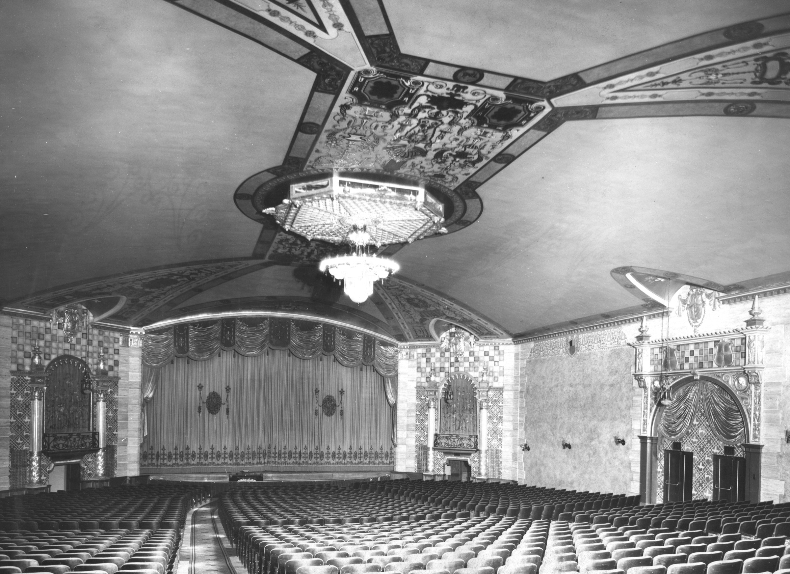
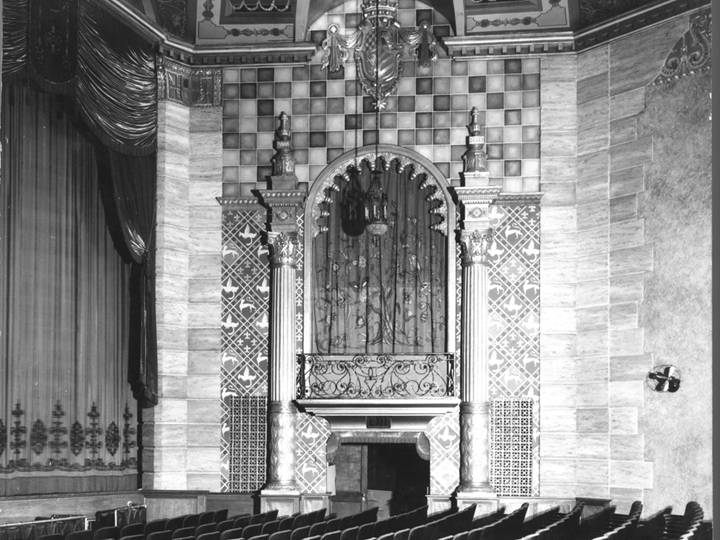
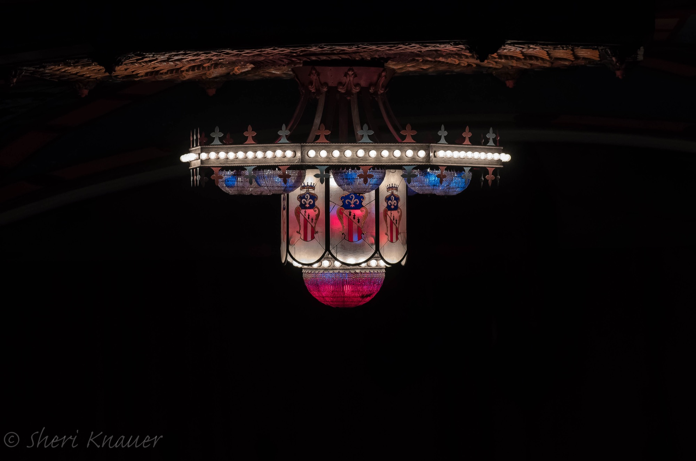

Our Story · 1927 – Today
A biplane showering roses. A $20,000 organ with bird calls and hoofbeats. A fire, thirty-eight years of silence, and a second act. This is the whole story.
Act One · 1927
The Lansdowne Theater rose in the mid-1920s on the site of Blanchepierre, the demolished home of attorney Francis Taylor. The Stanley Company of America and Herbert Effinger commissioned architect William Harold Lee — who would design more than eighty theaters across the country, including Mount Airy’s Sedgwick and Bryn Mawr’s Seville — to build a movie palace in the Hollywood Moorish style: a courtyard of fountains, an ornate lobby, an elaborate hand-painted ceiling, and a grand chandelier. The cost: $250,000.
It opened June 1, 1927 with the first-run picture Knockout Riley, starring Richard Dix. Company president John J. McGuirk pronounced it the best example of suburban theatre construction around Philadelphia. Overhead, Miss Lansdowne — a Swedish exchange student — circled in a biplane, showering the crowd below with roses.
Tickets ran 15¢ to 35¢, with shows at 2:30, 7:00, and 9:00, Monday through Saturday. Harrison Brothers Construction, who built the theater and much of the surrounding block, filled the storefronts with a florist, a bootery, a furniture company, and a tailor.

The Mighty Kimball
The theater’s W.W. Kimball Company organ, shipped from Chicago at a cost of $20,000, was the last theater organ installed in the Philadelphia region. Built to accompany silent films, it controlled an entire percussion arsenal hidden in the organ lofts:
Talkies silenced the Kimball in 1937. A quarter-century later, enthusiasts Bill Greenwood, W.E. Stinger Jr., and W. Crawford brought it back to life, and on February 24, 1963 the organ played the Lansdowne again. Organist James Paulin gave its final major concert on November 18, 1975; the instrument was later sold and today sits in storage in the Southwest.

The Neighborhood Years
For half a century the Lansdowne was the borough’s living room. The American Legion youth bugle corps played its first anniversary. Songwriter and bandleader Bobby Heath sold the house out. On September 7, 1980, Harry Chapin played a benefit concert on its stage for Congressman Bob Edgar.
Upstairs, the second-floor offices held dentists and optometrists — and, in the 1980s, a painter from Broomall named Len Cella, who built an 80-seat screening room where he produced his absurdist “Moron Movies,” later aired on Johnny Carson’s Tonight Show.
When multiplexes were shuttering single-screen houses across America, owner Sara Gail (1979–1986) kept the projectors running on two-dollar tickets.
“I didn’t buy this old movie house to make a lot of money.” — Sara Gail, owner, 1979–1986
July 3, 1987
During a screening of Beverly Hills Cop II, an electrical fire broke out in the basement of an adjacent storefront. A hundred patrons walked out safely into the summer night. The auditorium itself survived — but the theater’s wiring did not, and the doors closed.
That same year, the building was added to the National Register of Historic Places — a landmark, now dark. Owner Jerry Raff’s financial troubles handed the building to Bell Savings and Loan in 1989, then to the Resolution Trust Corporation, then to auction. For thirty-eight years, the marquee stayed unlit.

The Long Intermission · 1987 – 2025
In 2006, the Greater Lansdowne Civic Association and the Lansdowne Economic Development Corporation formed the Historic Lansdowne Theater Corporation, which purchased the building in 2007 — weeks before it was to become an electrical-supply warehouse.
Even shuttered, the Lansdowne kept finding the spotlight. In 2011, Silver Linings Playbook filmed Bradley Cooper and Jennifer Lawrence beneath a marquee specially relit on Halloween. Peter Flynn’s 2014 documentary The Dying of the Light ran the theater’s original carbon-arc projectors for the first time in 27 years. AMC shot its “Fearfest” promos here in 2012, and Tokyo Television came in 2015 for Vacations at Abandoned Places.
And on August 22, 2025 — after an 18-year, $21 million restoration — the doors opened again. That story deserves its own page →
Movies came to Lansdowne in 1912, when Century Hall began screening films on Thursday nights; after the Lansdowne opened, the ladies of the Twentieth Century Club hand-picked the Saturday matinees.
David Goodman, a Lansdowne resident, won an Academy Award for his 1985 documentary Witness to War — and credits the Lansdowne with sparking his love of cinema.
Jack Eaton (1888–1968), raised in Lansdowne, produced 78 films and won a 1949 Oscar for Aquatic House Party.
Henry Willson (1911–1978) grew up here in the 1920s before becoming the Hollywood agent who represented Lana Turner and Tab Hunter — and renamed a young actor Rock Hudson.
The theater is restored, reopened, and alive. Help the Historic Lansdowne Theater Corporation care for it into its second century.